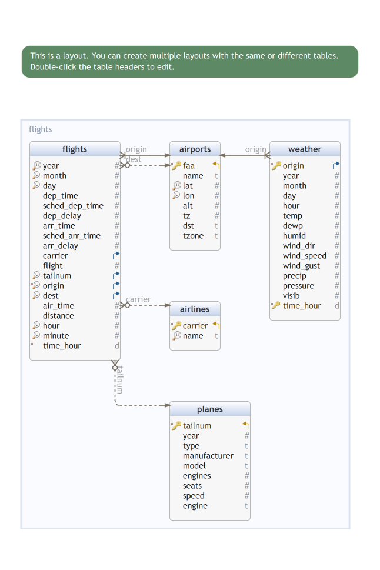

Tables manipulation with dplyr
Analyse de Données Master MIDS
2021-12-21
Tables
Tables (examples)
Speadsheets (Excel)
Relational tables
-
Dataframes in datascience frameworks
-
:
data.frame,tibble, … -
:
pandas.dataframe -
spark:dataframe -
Dask:dataframe - and many others
-
:
Tables (Why ?)
In Data Science, each framework comes with its own flavor(s) of table(s)
Tables from relational databases serve as inspiration
In legacy dataframes shape the life of statisticians and data scientists
The purpose of this session is
describe dataframes from an end-user viewpoint (we leave aside implementations)
-
presenting tools for
- accessing information within dataframes (querying)
- summarizing information (aggregation queries)
- cleaning/cleaning dataframes (tidying)
Loading tables and packages
About loaded packages
Metapackage
tidyverseprovides tools to create, query, tidy dataframes as well as tools to load data from various sources and save them in persistent storagenycflights13provides the dataframes we play withgtfor tayloring table displays
The flights table
Rows: 6
Columns: 19
$ year <int> 2013,…
$ month <int> 1, 1,…
$ day <int> 1, 1,…
$ dep_time <int> 517, …
$ sched_dep_time <int> 515, …
$ dep_delay <dbl> 2, 4,…
$ arr_time <int> 830, …
$ sched_arr_time <int> 819, …
$ arr_delay <dbl> 11, 2…
$ carrier <chr> "UA",…
$ flight <int> 1545,…
$ tailnum <chr> "N142…
$ origin <chr> "EWR"…
$ dest <chr> "IAH"…
$ air_time <dbl> 227, …
$ distance <dbl> 1400,…
$ hour <dbl> 5, 5,…
$ minute <dbl> 15, 2…
$ time_hour <dttm> 2013…Table schema
A table is a list of columns
Each column has
- name and
- type (class in
Rows: 336,776
Columns: 19
$ year <int> 2013, 2013, 2013, 2013, 2…
$ month <int> 1, 1, 1, 1, 1, 1, 1, 1, 1…
$ day <int> 1, 1, 1, 1, 1, 1, 1, 1, 1…
$ dep_time <int> 517, 533, 542, 544, 554, …
$ sched_dep_time <int> 515, 529, 540, 545, 600, …
$ dep_delay <dbl> 2, 4, 2, -1, -6, -4, -5, …
$ arr_time <int> 830, 850, 923, 1004, 812,…
$ sched_arr_time <int> 819, 830, 850, 1022, 837,…
$ arr_delay <dbl> 11, 20, 33, -18, -25, 12,…
$ carrier <chr> "UA", "UA", "AA", "B6", "…
$ flight <int> 1545, 1714, 1141, 725, 46…
$ tailnum <chr> "N14228", "N24211", "N619…
$ origin <chr> "EWR", "LGA", "JFK", "JFK…
$ dest <chr> "IAH", "IAH", "MIA", "BQN…
$ air_time <dbl> 227, 227, 160, 183, 116, …
$ distance <dbl> 1400, 1416, 1089, 1576, 7…
$ hour <dbl> 5, 5, 5, 5, 6, 5, 6, 6, 6…
$ minute <dbl> 15, 29, 40, 45, 0, 58, 0,…
$ time_hour <dttm> 2013-01-01 05:00:00, 201…-
flightshas 19 columns - Each column is a sequence (
vector) of items with the same type/class - All columns have the same length
-
flightshas 336776 rows - In parlance, a row is (often) called a tuple
- In parlance, a column is (often) called a variable
Column types
| class | columns |
|---|---|
integer |
‘year’ ‘month’ ‘day’ ‘dep_time’ ‘sched_dep_time’ ‘arr_time’ ‘sched_arr_time’ ‘flight’ |
numeric |
‘dep_delay’ ‘arr_delay’ ‘air_time’ ‘distance’ ‘hour’ ‘minute’ |
character |
‘carrier’ ‘tailnum’ ‘origin’ ‘dest’ |
POSIXct |
‘time_hour’ |
POSIXt |
‘time_hour’ |
A column, as a vector, may be belong to different classes
Other classes: factor for categorical variables
Columns dest, origin carrier could be coerced as factors
Should columns dest and origin be coerced to the same factor?
nycflights13

Columns specification
cols(
year = col_integer(),
month = col_integer(),
day = col_integer(),
dep_time = col_integer(),
sched_dep_time = col_integer(),
dep_delay = col_double(),
arr_time = col_integer(),
sched_arr_time = col_integer(),
arr_delay = col_double(),
carrier = col_character(),
flight = col_integer(),
tailnum = col_character(),
origin = col_character(),
dest = col_character(),
air_time = col_double(),
distance = col_double(),
hour = col_double(),
minute = col_double(),
time_hour = col_datetime(format = "")
)\(\approx\) table schema in relational databases
Column specifications are useful when loading dataframes from structured text files like .csv files
.csv files do not contain typing information
File loaders from package readr can be tipped about column classes using column specifications
SQL and Relational algebra with dplyr
SQL stands for structured/simple Query Language
A query language elaborated during the 1970’s at IBM by E. Codd
Geared towards exploitation of collections of relational tables
Less powerful but simpler to use than a programming language
dplyris a principled -friendly implementation of SQL ideas (and other things)
At the core of SQL lies the idea of a table calculus called relational algebra
Relational algebra (basics)
Convention: \(R\) is a table with columns \(A_1, \ldots, A_k\)
Projection (picking columns)
\(\pi(R, A_1, A_3)\)
Selection/Filtering (picking rows)
\(\sigma(R, {\text{condition}})\)
Join (mulitple tables operation)
\(\bowtie(R,S, {\text{condition}})\)
Any operation produces a table
The schema of the derived table depends on the operation (but does not depend on the content/value of the operands)
Table calculus relies on a small set of basic operations \(\pi, \sigma, \bowtie\)
Each operation has one or two table operands and produce a table
There is more to SQL than relational algebra
Projection \(\pi\)
\(\pi(R, {A_1, A_3})\)
A projection \(\pi(\cdot, {A_1, A_3})\) is defined by a set of column names, say \(A_1, A_3\)
If \(R\) has columns with given names, the result is a table with names \(A_1, A_3\) and one row per row of \(R\)
A projection is parametrized by a list of column names
Package dplyr
Base provides tools to perform relational algebra operations
But:
Base does not provide a consistent API
The lack of a consistent API makes operation chaining tricky
dplyr verbs
Five basic verbs:
Pick observations/rows by their values (
filter()) σ(…)Pick variables by their names (
select()) π(…)Reorder the rows (
arrange())Create new variables with functions of existing variables (
mutate())Collapse many values down to a single summary (
summarise())
And
-
group_by()changes the scope of each function from operating on the entire dataset to operating on it group-by-group
tidyverse
All verbs work similarly:
The first argument is a data frame (table).
The subsequent arguments describe what to do with the data frame, using the variable/column names (without quotes)
The result is a new data frame (table)
dplyr::select() as a projection operator (π)
\(\pi(R, \underbrace{A_1, \ldots, A_3}_{\text{column names}})\)
or, equivalently
|> is the pipe operator
x |> f(y, z) is translated to f(x, y, z) and then evaluated
dplyr::select()
Function
selecthas a variable number of argumentsFunction
selecthas a variable number of argumentsFunction
selectallows to pick column by names (and much more)Note that in the current environment, there are no objects called
A1,A3The consistent API allows to use the pipe operator
Caution
There is also a select() function in base R
Toy tables
| A1 | A2 | A3 | D |
|---|---|---|---|
| 2 | q | 2021-10-21 | r |
| 4 | e | 2021-10-28 | q |
| 6 | a | 2021-11-04 | o |
| 8 | j | 2021-11-11 | g |
| 10 | d | 2021-11-18 | d |
| E | F | G | D |
|---|---|---|---|
| 3 | y | 2021-10-21 | o |
| 4 | e | 2021-10-22 | c |
| 6 | n | 2021-10-23 | i |
| 9 | t | 2021-10-24 | d |
| 10 | r | 2021-10-25 | e |
Projecting toy tables
Projecting flights on origin and dest
# A tibble: 6 × 2
origin dest
<chr> <chr>
1 EWR IAH
2 LGA IAH
3 JFK MIA
4 JFK BQN
5 LGA ATL
6 EWR ORD A more readable equivalent of
or
\(\sigma(R, \text{condition})\)
A selection/filtering operation is defined by a condition that can be checked on the rows of tables with convenient schema
\(\sigma(R, \text{condition})\) returns a table with the same schema as \(R\)
The resulting table contains the rows/tuples of \(R\) that satisfy \(\text{condition}\)
\(\sigma(R, \text{FALSE})\) returns an empty table with the same schema as \(R\)
Chaining filtering and projecting
Selecting flights based on origin and dest
and then projecting on dest, time_hour, carrier
# A tibble: 6 × 3
dest time_hour carrier
<chr> <dttm> <chr>
1 LAX 2013-01-01 06:00:00 UA
2 ATL 2013-01-01 06:00:00 DL
3 LAX 2013-01-01 07:00:00 VX
4 LAX 2013-01-01 07:00:00 B6
5 LAX 2013-01-01 07:00:00 AA
6 ATL 2013-01-01 08:00:00 DL In SQL ( parlance:
Logical operations
filter(R, condition_1, condition_2)is meant to return the rows ofRthat satisfycondition_1andcondition_2filter(R, condition_1 & condition_2)is an equivalent formulationfilter(R, condition_1 | condition_2)is meant to return the rows ofRthat satisfycondition_1orcondition_2(possibly both)filter(R, xor(condition_1,condition_2))is meant to return the rows ofRthat satisfy eithercondition_1orcondition_2(just one of them)filter(R, ! condition_1)is meant to return the rows ofRthat do not satisfycondition_1
Missing values!
Numerical column dep_time contains many NA's (missing values)
Min. 1st Qu. Median Mean 3rd Qu. Max. NA's
1 907 1401 1349 1744 2400 8255 Missing values (NA and variants) should be handled with care
[1] NA
[1] TRUE
Truth tables for three-valued logic
uses three-valued logic
Generate complete truth tables for and, or, xor
| TRUE | FALSE | NA | |
|---|---|---|---|
| TRUE | TRUE | FALSE | NA |
| FALSE | FALSE | FALSE | FALSE |
| NA | NA | FALSE | NA |
| TRUE | FALSE | NA | |
|---|---|---|---|
| TRUE | TRUE | TRUE | TRUE |
| FALSE | TRUE | FALSE | NA |
| NA | TRUE | NA | NA |
| TRUE | FALSE | NA | |
|---|---|---|---|
| TRUE | FALSE | TRUE | NA |
| FALSE | TRUE | FALSE | NA |
| NA | NA | NA | NA |
slice(): choosing rows based on location
In base dataframe cells can be addressed by indices
flights[5000:5010,seq(1, 19, by=5)] returns rows 5000:5010 and columns 1, 6, 11 from dataframe flights
This can be done in a (verbose) dplyr way using slice() and select()
combined with aggregation (group_by()) variants of slice_ may be used to perform windowing operations
Useful variant slice_sample()
Joins : multi-table queries
Note
\(\bowtie(R,S, {\text{condition}})\)
stands for
join rows/tuples of \(R\) and rows/tuples of \(S\) that satisfy \(\text{condition}\)
nycflights tables
The nycflights13 package offers five related tables:
-
Fact tables:
flights-
weather(hourly weather conditions at different locations)
-
Dimension tables:
-
airports(airports full names, location, …) -
planes(model, manufacturer, year, …) -
airlines(full names)
-
This is an instance of a Star Schema
About Star schemas
Fact tables record measurements for a specific event
Fact tables generally consist of numeric values, and foreign keys to dimensional data where descriptive information is kept
Dimension tables record informations about entities involved in events recorded in Fact tables
weather conditions
Rows: 26,115
Columns: 15
$ origin <chr> "EWR", "EWR", "EWR", "EWR", "…
$ year <int> 2013, 2013, 2013, 2013, 2013,…
$ month <int> 1, 1, 1, 1, 1, 1, 1, 1, 1, 1,…
$ day <int> 1, 1, 1, 1, 1, 1, 1, 1, 1, 1,…
$ hour <int> 1, 2, 3, 4, 5, 6, 7, 8, 9, 10…
$ temp <dbl> 39.02, 39.02, 39.02, 39.92, 3…
$ dewp <dbl> 26.06, 26.96, 28.04, 28.04, 2…
$ humid <dbl> 59.37, 61.63, 64.43, 62.21, 6…
$ wind_dir <dbl> 270, 250, 240, 250, 260, 240,…
$ wind_speed <dbl> 10.35702, 8.05546, 11.50780, …
$ wind_gust <dbl> NA, NA, NA, NA, NA, NA, NA, N…
$ precip <dbl> 0, 0, 0, 0, 0, 0, 0, 0, 0, 0,…
$ pressure <dbl> 1012.0, 1012.3, 1012.5, 1012.…
$ visib <dbl> 10, 10, 10, 10, 10, 10, 10, 1…
$ time_hour <dttm> 2013-01-01 01:00:00, 2013-01…Connecting flights and weather
We want to complement information in flights using data weather
Motivation: we would like to relate delays (arr_delay) and weather conditions
can we explain (justify) delays using weather data?
can we predict delays using weather data?
⋈
For each flight (row in flights)
year,month,day,hour(computed fromtime_hour) indicate the approaximate time of departureoriginindicates the airport where the plane takes off
Each row of weather contains corresponding information
for each row of flights we look for rows of weather with matching values in year, month, day, hour and origin
NATURAL INNER JOIN between the tables
inner_join: natural join
Rows: 335,220
Columns: 14
$ year <int> 2013, 2013, 2013, 2013, 2…
$ day <int> 1, 1, 1, 1, 1, 1, 1, 1, 1…
$ sched_dep_time <int> 515, 529, 540, 545, 600, …
$ arr_time <int> 830, 850, 923, 1004, 812,…
$ arr_delay <dbl> 11, 20, 33, -18, -25, 12,…
$ flight <int> 1545, 1714, 1141, 725, 46…
$ origin <chr> "EWR", "LGA", "JFK", "JFK…
$ air_time <dbl> 227, 227, 160, 183, 116, …
$ hour <dbl> 5, 5, 5, 5, 6, 5, 6, 6, 6…
$ time_hour <dttm> 2013-01-01 05:00:00, 201…
$ dewp <dbl> 28.04, 24.98, 26.96, 26.9…
$ wind_dir <dbl> 260, 250, 260, 260, 260, …
$ wind_gust <dbl> NA, 21.86482, NA, NA, 23.…
$ pressure <dbl> 1011.9, 1011.4, 1012.1, 1…Join schema
Rows: 335,220
Columns: 28
$ year <int> 2013, 2013, 2013, 2013, 2…
$ month <int> 1, 1, 1, 1, 1, 1, 1, 1, 1…
$ day <int> 1, 1, 1, 1, 1, 1, 1, 1, 1…
$ dep_time <int> 517, 533, 542, 544, 554, …
$ sched_dep_time <int> 515, 529, 540, 545, 600, …
$ dep_delay <dbl> 2, 4, 2, -1, -6, -4, -5, …
$ arr_time <int> 830, 850, 923, 1004, 812,…
$ sched_arr_time <int> 819, 830, 850, 1022, 837,…
$ arr_delay <dbl> 11, 20, 33, -18, -25, 12,…
$ carrier <chr> "UA", "UA", "AA", "B6", "…
$ flight <int> 1545, 1714, 1141, 725, 46…
$ tailnum <chr> "N14228", "N24211", "N619…
$ origin <chr> "EWR", "LGA", "JFK", "JFK…
$ dest <chr> "IAH", "IAH", "MIA", "BQN…
$ air_time <dbl> 227, 227, 160, 183, 116, …
$ distance <dbl> 1400, 1416, 1089, 1576, 7…
$ hour <dbl> 5, 5, 5, 5, 6, 5, 6, 6, 6…
$ minute <dbl> 15, 29, 40, 45, 0, 58, 0,…
$ time_hour <dttm> 2013-01-01 05:00:00, 201…
$ temp <dbl> 39.02, 39.92, 39.02, 39.0…
$ dewp <dbl> 28.04, 24.98, 26.96, 26.9…
$ humid <dbl> 64.43, 54.81, 61.63, 61.6…
$ wind_dir <dbl> 260, 250, 260, 260, 260, …
$ wind_speed <dbl> 12.65858, 14.96014, 14.96…
$ wind_gust <dbl> NA, 21.86482, NA, NA, 23.…
$ precip <dbl> 0, 0, 0, 0, 0, 0, 0, 0, 0…
$ pressure <dbl> 1011.9, 1011.4, 1012.1, 1…
$ visib <dbl> 10, 10, 10, 10, 10, 10, 1…The schema of the result is the union of the schemas of the operands
A tuple from flights matches a tuple from weather if the tuple have the same values in the common columns:
[1] "year" "month" "day" "dep_time"
[5] "sched_dep_time" "dep_delay" "arr_time" "sched_arr_time"
[9] "arr_delay" "carrier" "flight" "tailnum"
[13] "origin" "dest" "air_time" "distance"
[17] "hour" "minute" "time_hour" "temp"
[21] "dewp" "humid" "wind_dir" "wind_speed"
[25] "wind_gust" "precip" "pressure" "visib" Which columns are used when joining tables \(R\) and \(S\)?
default behavior of
inner_join: all columns shared by \(R\) and \(S\). Common columns have the same name in both schema. They are expected to have the same classmanual definition: in many settings, we want to overrule the default behavior. We specify manually which column from \(R\) should match which column from \(S\)
Natural join of flights and weather:
Are you surprised by the next chunk?
Recall that columns year, month day hour can be computed from time_hour
The two results do not have the same schema!
Fixing
About inner_join
-
by:-
by=c("A1", "A3", "A7")rowrfromRandsfromSmatch ifr.A1 == s.A1,r.A3 == s.A3,r.A7 == s.A7 -
by=c("A1"="B", "A3"="C", "A7"="D")rowrfromRandsfromSmatch ifr.A1 == s.B,r.A3 == s.C,r.A7 == s.D
-
suffix: If there are non-joined duplicate variables inxandy, these suffixes will be added to the output to disambiguate them.keep: Should the join keys from bothxandybe preserved in the output?na_matches: Should NA and NaN values match one another?
Join flavors
Different flavors of join can be used to join one table to columns from another, matching values with the rows that they correspond to
Each join retains a different combination of values from the tables
left_join(x, y, by = NULL, suffix = c(".x", ".y"), ...)Join matching values fromytox. Retain all rows ofxpadding missing values fromybyNAsemi_join…anti_join…
Toy examples : inner_join
| A1 | A2 | A3 | D |
|---|---|---|---|
| 2 | q | 2021-10-21 | r |
| 4 | e | 2021-10-28 | q |
| 6 | a | 2021-11-04 | o |
| 8 | j | 2021-11-11 | g |
| 10 | d | 2021-11-18 | d |
| E | F | G | D |
|---|---|---|---|
| 3 | y | 2021-10-21 | o |
| 4 | e | 2021-10-22 | c |
| 6 | n | 2021-10-23 | i |
| 9 | t | 2021-10-24 | d |
| 10 | r | 2021-10-25 | e |
| E | F | G | D.x | A2 | A3 | D.y |
|---|---|---|---|---|---|---|
| 4 | e | 2021-10-22 | c | e | 2021-10-28 | q |
| 6 | n | 2021-10-23 | i | a | 2021-11-04 | o |
| 10 | r | 2021-10-25 | e | d | 2021-11-18 | d |
Toy examples : left_join
| A1 | A2 | A3 | D |
|---|---|---|---|
| 2 | q | 2021-10-21 | r |
| 4 | e | 2021-10-28 | q |
| 6 | a | 2021-11-04 | o |
| 8 | j | 2021-11-11 | g |
| 10 | d | 2021-11-18 | d |
| E | F | G | D |
|---|---|---|---|
| 3 | y | 2021-10-21 | o |
| 4 | e | 2021-10-22 | c |
| 6 | n | 2021-10-23 | i |
| 9 | t | 2021-10-24 | d |
| 10 | r | 2021-10-25 | e |
| E | F | G | D.x | A2 | A3 | D.y |
|---|---|---|---|---|---|---|
| 3 | y | 2021-10-21 | o | NA | NA | NA |
| 4 | e | 2021-10-22 | c | e | 2021-10-28 | q |
| 6 | n | 2021-10-23 | i | a | 2021-11-04 | o |
| 9 | t | 2021-10-24 | d | NA | NA | NA |
| 10 | r | 2021-10-25 | e | d | 2021-11-18 | d |
Toy examples : semi_join anti_join
| A1 | A2 | A3 | D |
|---|---|---|---|
| 2 | q | 2021-10-21 | r |
| 4 | e | 2021-10-28 | q |
| 6 | a | 2021-11-04 | o |
| 8 | j | 2021-11-11 | g |
| 10 | d | 2021-11-18 | d |
| E | F | G | D |
|---|---|---|---|
| 3 | y | 2021-10-21 | o |
| 4 | e | 2021-10-22 | c |
| 6 | n | 2021-10-23 | i |
| 9 | t | 2021-10-24 | d |
| 10 | r | 2021-10-25 | e |
| E | F | G | D |
|---|---|---|---|
| 4 | e | 2021-10-22 | c |
| 6 | n | 2021-10-23 | i |
| 10 | r | 2021-10-25 | e |
| E | F | G | D |
|---|---|---|---|
| 3 | y | 2021-10-21 | o |
| 9 | t | 2021-10-24 | d |
Conditional/ \(\theta\) -join
In relational databases, joins are not restricted to natural joins
\[U \leftarrow R \bowtie_{\theta} S\]
reads as
\[\begin{array}{rl} T & \leftarrow R \times S\\ U & \leftarrow \sigma(T, \theta)\end{array}\]
where
\(R \times S\) is the cartesian product of \(R\) and \(S\)
\(\theta\) is a boolean expression that can be evaluated on any tuple of \(R \times S\)
Do we need conditional/ \(\theta\) -joins?
Note
: We can implement \(\theta\)/conditional-joins by pipelining a cross product and a filtering
Caution
: Cross products are costly:
- \(\#\text{rows}(R \times S) = \#\text{rows}(R) \times \#\text{rows}(S)\)
- \(\#\text{cols}(R \times S) = \#\text{cols}(R) + \#\text{cols}(S)\)
Do we need conditional/ \(\theta\) -joins?
Note
: RDBMS use query planning and optimization, indexing to circumvent the cross product bottleneck (when possible)
Tip
: if we need to perform a \(\theta\)-join
- outsource it to a RDBMS, or
- design an ad hoc pipeline
A conditional join between flights and weather
The natural join between
flightsandweatherwe implemented can be regarded as an ad hoc conditional join between normalized versions ofweatherandflightsTable
flightsandweatherare redundant:year,month,day,hourcan be computed fromtime_hourAssume
flightsandweatherare trimmed so as to become irredundantThe conditional join is then based on truncations of variables
time_hour
- Adding redundant columns to
flightsandweatherallows us to transform a tricky conditional join into a simple natural join
Creating new columns
Creation of new columns may happen
on the fly
when altering (enriching) the schema of a table
In databases, creation of new columns may be the result of a query or be the result of altering a table schema with ALTER TABLE ADD COLUMN ...
In tidyverse() we use verbs mutate or add_column to add columns to the input table
mutate
.data: the input data frame
new_col= expression:
new_colis the name of a new columnexpressionis evaluated on each row of.dataor it is a vector of length1allis the default behavior, retains all columns from.data
Creating a categorical column to spot large delays
breaks_delay <- with(flights,
c(min(arr_delay, na.rm=TRUE),
0, 30,
max(arr_delay, na.rm=TRUE))
)
level_delay <- c("None",
"Moderate",
"Large")
flights |>
mutate(large_delay = cut(
arr_delay, #<<
breaks=breaks_delay, #<<
labels=level_delay, #<<
ordered_result=TRUE)) |> #<<
select(large_delay, arr_delay) |>
sample_n(5)# A tibble: 5 × 2
large_delay arr_delay
<ord> <dbl>
1 Large 219
2 Moderate 18
3 None -19
4 None -16
5 None -1Changing the class of a column
# A tibble: 5 × 4
large_delay arr_delay origin dest
<ord> <dbl> <fct> <fct>
1 None -44 LGA CVG
2 None -15 EWR DAY
3 Large 136 EWR DEN
4 None -9 EWR TPA
5 Moderate 14 LGA TPA Tidy tables
Tidying tables is part of data cleaning
A (tidy) dataset is a collection of values, usually either numbers (if quantitative) or strings (if qualitative)
Values are organised in two ways
Every value belongs to a variable and an observation
A variable contains all values that measure the same underlying attribute (like height, temperature, duration) across units
An observation contains all values measured on the same unit (like a person, or a day, or a race) across attributes
The principles of tidy data are tied to those of relational databases and Codd’s relational algebra
Codd’s principles
- Information is represented logically in tables
- Data must be logically accessible by table, primary key, and column.
- Null values must be uniformly treated as “missing information,” not as empty strings, blanks, or zeros.
- Metadata (data about the database) must be stored in the database just as regular data is
- A single language must be able to define data, views, integrity constraints, authorization, transactions, and data manipulation
- Views must show the updates of their base tables and vice versa
- A single operation must be available to do each of the following operations: retrieve data, insert data, update data, or delete data
- Batch and end-user operations are logically separate from physical storage and access methods
- Batch and end-user operations can change the database schema without having to recreate it or the applications built upon it
- Integrity constraints must be available and stored in the metadata, not in an application program
- The data manipulation language of the relational system should not care where or how the physical data is distributed and should not require alteration if the physical data is centralized or distributed
- Any row processing done in the system must obey the same integrity rules and constraints that set-processing operations do
dplyr functions expect and return tidy tables
In a tidy table
Each variable is a column
Each observation is a row
Every cell is a single value
In order to tell whether a table is tidy, we need to know what is the population under investigation, what are the observations/individuals, which measures are performed on each individual, …
Untidy data
Column headers are values, not variable names.
Multiple variables are stored in one column.
Variables are stored in both rows and columns.
Multiple types of observational units are stored in the same table.
A single observational unit is stored in multiple tables.
…
Functions from tidyr::...
pivot_widerandpivot_longerseparateanduniteHandling missing values with
complete,fill, ……
Pivot longer
pivot_longer() is commonly needed to tidy wild-caught datasets as they often optimise for ease of data entry or ease of comparison rather than ease of analysis.
| row | a | b | c |
|---|---|---|---|
| A | 1 | 4 | 7 |
| B | 2 | 5 | 8 |
| C | 3 | 6 | 9 |
Pivot wider
some optional arguments are missing
When reporting, we often use pivot_wider (explicitely or implicitely) to make results more readable, possibly to conform to a tradition
- Life tables in demography and actuarial science
- Longitudinal data
- See slide How many flights per day of week per departure airport?
pivot_wider() in action
Aggregations
How many flights per carrier?
# A tibble: 16 × 2
carrier count
<chr> <int>
1 UA 58665
2 B6 54635
3 EV 54173
4 DL 48110
5 AA 32729
6 MQ 26397
7 US 20536
8 9E 18460
9 WN 12275
10 VX 5162
11 FL 3260
12 AS 714
13 F9 685
14 YV 601
15 HA 342
16 OO 32How many flights per day of week per departure airport?
flights |>
group_by(origin, wday(time_hour, abbr=T, label=T)) |> #<<
summarise(count=n(), .groups="drop") |> #<<
rename(day_of_week=`wday(time_hour, abbr = T, label = T)`) |>
pivot_wider( #<<
id_cols="origin", #<<
names_from="day_of_week", #<<
values_from="count") |> #<<
kable(caption="Departures per day")| origin | dim. | lun. | mar. | mer. | jeu. | ven. | sam. |
|---|---|---|---|---|---|---|---|
| EWR | 16425 | 18329 | 18243 | 18180 | 18169 | 18142 | 13347 |
| JFK | 15966 | 16104 | 16017 | 15841 | 16087 | 16176 | 15088 |
| LGA | 13966 | 16257 | 16162 | 16039 | 15963 | 15990 | 10285 |
Window queries
Window queries
Assume we want to answer the question: for each day of week (Monday, Tuesday, …), what are the five carriers that experience the largest average delay?
# A tibble: 14 × 3
# Groups: weekdays(time_hour) [7]
`weekdays(time_hour)` carrier avg_dep_delay
<chr> <chr> <dbl>
1 dimanche F9 23.7
2 dimanche VX 17.4
3 jeudi YV 29.7
4 jeudi F9 26.5
5 lundi FL 24.8
6 lundi EV 23.4
7 mardi YV 19.1
8 mardi FL 17.7
9 mercredi OO 52
10 mercredi HA 24.5
11 samedi OO 41
12 samedi F9 15.8
13 vendredi OO 29
14 vendredi F9 25.6The SQL way
WITH R AS (
SELECT
EXTRACT(dow FROM time_hour) AS day_of_week,
carrier,
AVG(dep_delay) AS avg_dep_delay
FROM
flights
GROUP BY
EXTRACT(dow FROM time_hour), carrier
), S AS (
SELECT
day_of_week,
carrier,
rank() OVER (PARTITION by day_of_week ORDER BY avg_dep_delay DESC) AS rnk
FROM
R
)
SELECT
day_of_week,
carrier,
rnk
FROM
S
WHERE
rnk <= 10 ;Sliding windows and package slider
TODO
Pipelines/chaining operations
|>, %>% and other pipes
All
dplyrfunctions take a table as the first argumentRather than forcing the user to either save intermediate objects or nest functions,
dplyrprovides the|>operator frommagrittrx |> f(y)turns intof(x, y)The result from one step is piped into the next step
Use
|>to rewrite multiple operations that you can read left-to-right/top-to-bottom
Magrittr %>%
-
%>%is not tied todplyr -
%>%can be used with packages fromtidyverse -
%>%can be used outsidetidyversethat is with functions which take a table (or something else) as a second, third or keyword argument
Use pronoun . to denote the LHS of the pipe expression
Standard pipe |> (version > 4.)
As of version 4.1 (2021), base offers a pipe operator denoted by |>
Other pipes
Magrittr offers several variants of |>
- Tee operator
%T>% - Assignement pipe
%<>% - Exposition operator
%$% - …
Base has a pipe() function to manipulate connections (Files, URLs, …)
References
- R for Data Science
- Rstudio cheat sheets
Pandas (Python) versus R dataframes : in words
The document Comparison with R in Pandas documentation is somewhat outdated, yet, it remains useful.
In a single package, through classes DataFrame and Series, Pandas covers things that are handled by a collection of packages in R :
- Querying (
dplyr,dtplyr,dbplyr) - Reshaping (
tidyr) - Summary statistics (
skimr) - Bridging with graphical backends (
ggplot2) - Table display (
gt) - Readers and writers (
readr,readxl, …) - …
Tidy selection and tidy evaluation
Thanks to tidy evaluation, R programmers can avoid quoting column names. Some programmers like it that way.
Near future
Pandas (up to 2.xx) has not been praised for its treatment of strings and missing data. This is changing with the Arrow revolution and Pandas 3.0
The End
Table calculus with dplyr

MA7BY020 – Analyse de Données – M1 MIDS – UParis Cité